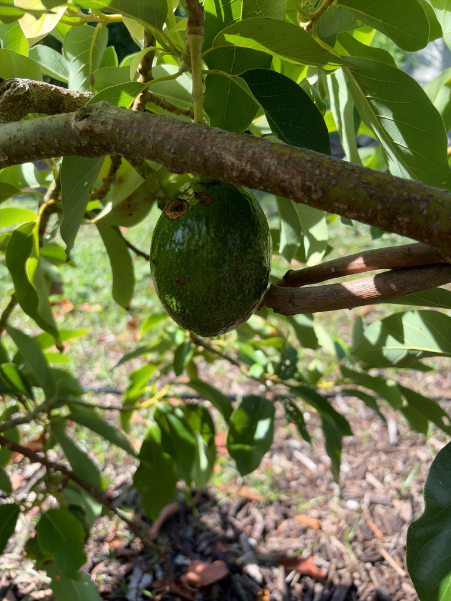

- The avocado is a berry — botanically a single-seeded berry — despite its size and buttery, savory flesh.
- Its flowers play a clever trick: each opens as female one day and male the next, timing the switch to avoid pollinating itself.
Native to south-central Mexico and Central America, where it has been cultivated for thousands of years. Now grown worldwide in warm climates, with Florida (especially the south) a major U.S. growing region.
- The avocado has been part of Mesoamerican life for millennia, long enough that its evolutionary partners — the giant ground sloths and other megafauna that once swallowed the fruit whole and dispersed its huge seed — have been extinct for thousands of years. The tree carries on, now spread by people instead.
- Its flowers are a marvel of anti-inbreeding design. Each flower opens twice: functioning as female on the first opening and male on the second, with the timing staggered so a tree tends to shed pollen when its own flowers are receptive as female, encouraging cross-pollination between trees.
- Unusually for a fruit, the avocado stores its energy as oil rather than sugar, which gives the flesh its rich, buttery quality. One caution worth posting: the leaves, bark, skin, and pit contain a compound called persin that is harmless to people in the fruit but toxic to many animals, birds most of all.
The small flowers are visited by bees and other insects. Birds and mammals eat fallen fruit, and the large evergreen canopy provides shade, cover, and nesting sites.
A medium to large evergreen tree with a broad, often spreading or dense canopy.
Small, greenish-yellow, in large branched clusters; each flower opens as female then male.
A large, pear-shaped to round berry with leathery green to black skin, buttery flesh, and one very large seed.
Large, glossy, elliptic, dark green.
A leafy evergreen tree hung with pear-shaped fruit and a single oversized pit inside. Cut fruit shows the smooth pale-green to yellow flesh.
The leaves, bark, skin, and seed of the avocado contain a natural compound called persin. While entirely safe and highly nutritious for people, persin is seriously toxic to birds, rabbits, and livestock, often causing fatal heart damage. Keep pet birds far away from any part of this tree.
Dogs and cats are significantly less sensitive to persin, but the large pit poses a severe choking and intestinal obstruction hazard, and consuming leaves or bark can cause digestive upset.
The avocado belongs to the laurel family (Lauraceae), which puts it in close botanical company with several other park specimens including sassafras, spicebush, and redbay. That shared family membership also means it faces laurel wilt, the same fungal disease currently threatening native redbay populations across Florida and the Southeast.


- © Ruby Meador (CC-BY-NC), via iNaturalist
- © Maria Escobar (CC-BY-NC), via iNaturalist
- © Denise Sosa (CC-BY-NC), via iNaturalist
- © Zailibeth Perez (CC-BY-NC), via iNaturalist